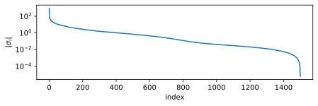

We start off with the so called eigendecomposition. The main idea is to compute a decomposition (or factorization) of a square matrix into a canonical form. We will represent a matrix by its eigenvalues and eigenvectors. In order to do so we need to recall some more definitions from our favourite linear algebra book, such as Golub and Van Loan (2013).
Theorem 5.1 (Singular Value Decomposition) If \(A \in \mathbb{R}^{m\times n}\) (a real \(m \times n\) matrix), there exists orthogonal matrices \[
U = \left[u_1 | \cdots | u_m \right] \in \mathbb{R}^{m\times m}
\quad
\text{and}
\quad
V = \left[v_1 | \cdots | v_n \right] \in \mathbb{R}^{n\times n}
\] such that \[
U^T A V = \Sigma = \operatorname{diag}(\sigma_1, \ldots, \sigma_p) \in \mathbb{R}^{m\times n}, \quad p=\min{m, m},
\tag{5.1}\] where \(\sigma_1 \geq \sigma_2 \geq \ldots \sigma_p \geq 0\).
We call \(\sigma_i\) a singular value of \(A\), the \(u_i\) are called the left singular values of \(A\) and \(v_i\) the right singular values of \(A\). Furthermore, \(\sigma_{max} (A)\) is the largest singular value of \(A\) and \(\sigma_{min} (A)\) is the smallest singular value of \(A\).
Instead of providing a concise proof (if you are interested see (Golub and Van Loan 2013, 76)) we show a possible motivation of the definition.
If we compute the eigendecompositions of \(AA^T\) and \(A^TA\). The two matrices have the same positive eigenvalues - the squares of the eignevalues of \(A\) and we get
\[
\begin{array}{lll} (A A^T)U &= & U(\Lambda\Lambda^T),\\
(A^T A)V &= & V(\Lambda^T\Lambda).
\end{array}
\] For \(A \in \mathbb{R}^{m\times n}\) with \(m>n\) the get \[
\Lambda = \left[
\begin{array}{c} \tilde{\Lambda}\\0\end{array}
\right]
\] with the diagonal matrix \(\tilde\Lambda\in\mathbb{R}^{n\times n}\) and \[
\begin{array}{llclc} \Lambda\Lambda^T & = & \left[
\begin{array}{cc}\tilde{\Lambda}^2 & 0 \\0 & 0 \end{array}
\right] & = & \left[
\begin{array}{cc}\tilde{\Sigma} & 0 \\0 & 0 \end{array}
\right], \\
\Lambda^T\Lambda & = & \tilde{\Lambda}^2 &= &\tilde{\Sigma}.
\end{array}
\] If we expand the matrices with zeros to match the correct dimensions this corresponds to the our singular value decomposition \[
A = U \Sigma V^T.
\]
Important
The singular value decomposition always exists, is real and all singular vectors are positive.
Again, to visualize the composition helps to better understand what is happening
Singular Value Decomposition
In the case that of \(m\geq n\) we can save storage by reducing the matrices \(U\) and \(\Sigma\), to their counterpart \(U_1\) and \(\Sigma_1\) by removing the zeros.
Definition 5.1 (Thin SVD) If \(A \in \mathbb{R}^{m\times n}\) for \(m\geq n\), then \[
A = \tilde{U} \tilde{\Sigma} V^T
\] where \[
U_1 = U(:, 1:n) = \left[u_1 | \cdots | u_n \right] \in \mathbb{R}^{m\times n}
\] and \[
\tilde{\Sigma} = \Sigma(1:n, 1:n) = \operatorname{diag}(\sigma_1, \ldots, \sigma_n) \in \mathbb{R}^{n\times n}.
\]
Again, we can cut of the reconstruction at a certain point and create an approximation. More formally this is defined in the next definition.
Definition 5.2 (Low-Rank Approximation) If \(A \in \mathbb{R}^{m\times n}\) and has the SVD \(A = U\Sigma V^T\) than \[
A_k = U(:, 1:k) \Sigma(1:k, 1:k) V^T(1:k, :)
\] is the optimal low-rank approximation of \(A\) with rank \(k\). This is often called the truncated SVD.
import matplotlib.pyplot as pltimport imageio.v3 as iioimport numpy as npimport numpy.linalg as LA%config InlineBackend.figure_formats = ['svg']im = np.asarray(iio.imread("https://www.mci.edu/en/download/27-logos-bilder?download=618:mci-eu-web"))def rgb2gray(rgb):return np.dot(rgb[...,:3], [0.2989, 0.5870, 0.1140])im_gray = rgb2gray(im)im_scale = im_gray[1500:3001,1500:3001] /255U, s, Vh = LA.svd(im_scale, full_matrices=False)rec = [1/1000, 10/100, 25/100, 50/100, 1]fig = plt.figure()ax_eig = fig.add_subplot(3,1,1)ax_eig.plot(s)ax_eig.set_yscale("log")ax_eig.set_ylabel(r"$|\sigma_i|$")#ax_eig.set_xlabel("$i$")ax_eig.set_title("singular value")ax_eig.set_aspect("auto", "box")axs = [] axs.append(fig.add_subplot(3, 3, 9))axs.append(fig.add_subplot(3, 3, 8))axs.append(fig.add_subplot(3, 3, 7))axs.append(fig.add_subplot(3, 3, 6))axs.append(fig.add_subplot(3, 3, 5))axs.append(fig.add_subplot(3, 3, 4))for i, p inenumerate(rec): r =int(np.ceil(len(s) * p)) A_r = U[:, :r] @ np.diag(s[:r]) @ Vh[:r, :] axs[i].imshow(A_r, cmap=plt.get_cmap("gray")) axs[i].set_axis_off() r = r -1 axs[i].set_title(f"${r=}$")axs[5].imshow(im_scale, cmap=plt.get_cmap("gray"))axs[5].set_axis_off()axs[5].set_title(f"Original image")plt.subplots_adjust(top =0.99, bottom=0.01, hspace=0.35, wspace=0.001)plt.show()

Figure 5.1: Image of MCI I and the reconstruction with reduced rank matrices.
Note
If we compare this to Figure 4.1 we can see that we get a much better result for smaller \(r\). In the next section we will try to get a better idea on why.
Golub, Gene H., and Charles F. Van Loan. 2013. Matrix Computations. 4th ed. Johns Hopkins Studies in the Mathematical Sciences.
{kind=link}
{kind=link}
{kind=link}